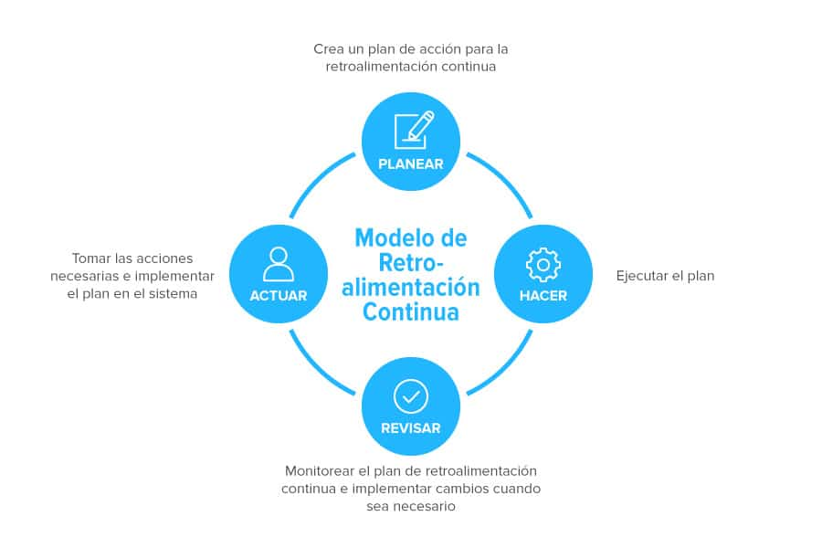

Grupo 5 Impacto y Direccion Estrategica
Introduccion al Impacto y Direccion Estrategica

Storytelling con datos para la toma de decisiones
Transforma datos en historias que conectan con las personas y guían acciones. El data storytelling combina análisis, visualización y narrativa para convertir información compleja en mensajes claros, relevantes y memorables. Es clave para comunicar hallazgos, detectar patrones y facilitar decisiones informadas en cualquier contexto profesional.

Clarificación de roles y responsabilidades El análisis de negocio permite establecer qué contribuye cada rol al logro de los objetivos estratégicos de la empresa. Esto se traduce en descripciones de tareas más precisas y alineadas con resultados medibles, evitando ambigüedades o duplicidad de funciones. 1. Conexión entre necesidades del negocio y trabajo operativo El Analista de Negocios (Business Analyst, BA) actúa como puente entre las partes interesadas y los equipos técnicos, asegurando que las necesidades identificadas se reflejen en las funciones diarias y responsabilidades concretas de cada puesto. Esto mejora la eficiencia operacional y reduce errores o retrabajos. 2. Optimización de competencias Al analizar los puestos de manera integral, el análisis de negocio define las competencias técnicas y blandas esenciales para cada tarea. Así, las descripciones de roles incluyen claramente: Responsabilidades específicas Requisitos de habilidades Interacción con otros departamentos Este enfoque facilita capacitación dirigida y selección de personal más adecuada. 3. Evidencia de impacto y desempeño Estudios muestran que existe una correlación significativa entre la descripción de cargos bien estructurada y el desempeño laboral (Rho-Spearman = 0,711, confianza 95%) (Fuente 2). Al integrar el análisis de negocio, se puede diseñar descripciones de tareas que no solo cumplan con criterios formales, sino que también potencien el rendimiento y la productividad. 4. Alineamiento estratégico El análisis de negocio garantiza que cada puesto y su descripción estejam alineados con los objetivos de la organización, fortaleciendo la planificación estratégica y mejorando la coherencia entre procesos, roles y resultados empresariales. Conclusión El análisis de negocio impacta directamente en la descripción de tareas mediante la definición clara de roles, responsabilidades, competencias y resultados esperados, vinculado siempre a las necesidades estratégicas de la organización. Una descripción de tareas fundamentada en análisis de negocio no solo documenta funciones, sino que se convierte en una herramienta de gestión, eficiencia y desarrollo del talento en la empresa.

Retroalimentación y mejora continua
Los sistemas de datos necesitan procesos de mejora constante basados en feedback de usuarios y resultados del negocio.

Alan Turing y las bases de la computación
Turing propuso la idea de una máquina capaz de ejecutar cualquier proceso lógico. Su modelo teórico marcó el inicio del pensamiento algorítmico que haría posible la IA.
“Podemos considerar que el razonamiento es una forma de cálculo.” — Leibniz